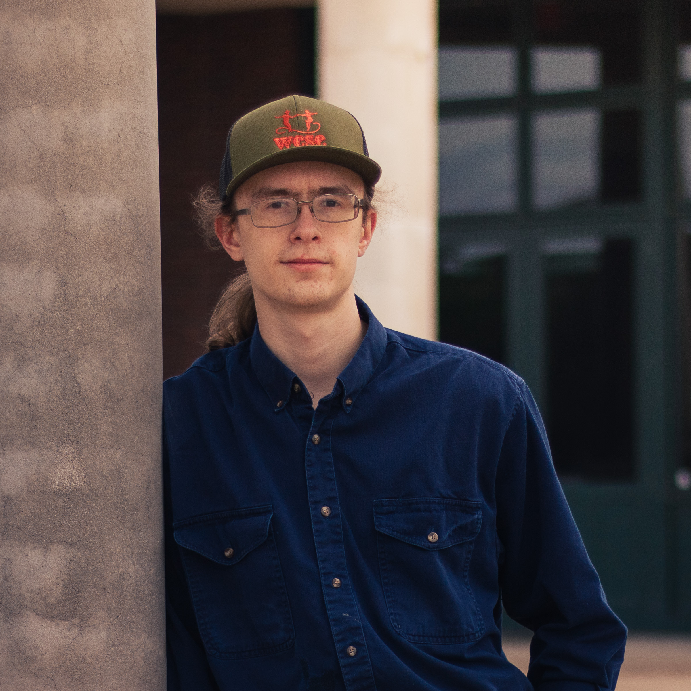

Jonatan Niemelä · Photographer
Family, portraits, and events.
About me
Experience with kids, parents, and movement.
With my 4 years working as an instructor at Family Martial Arts of Texas, connecting with both kids and parents is my specialty.
My 12 years of experience in martial arts also helps me understand movement, helping me capture sports and dance.
View Portfolio